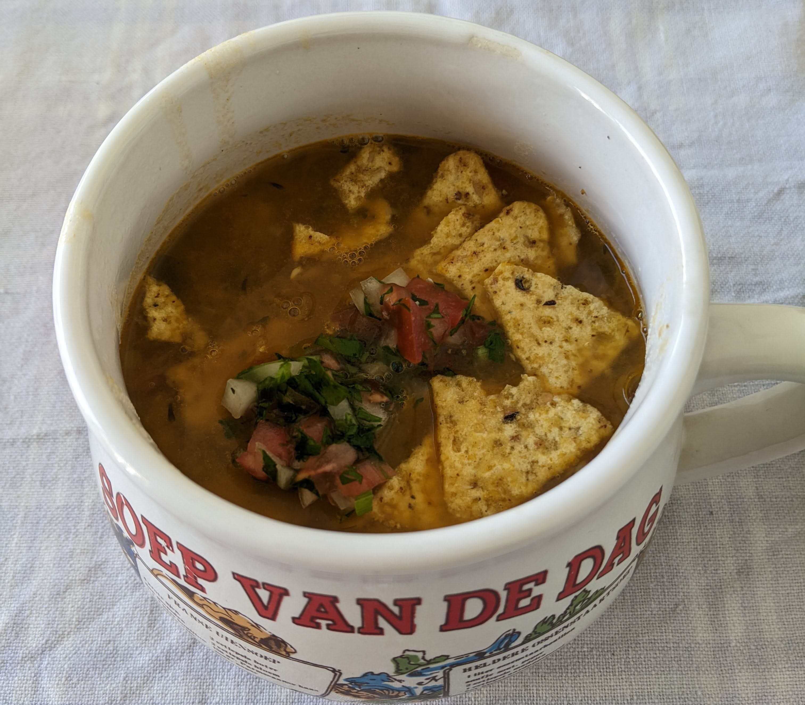

Sopa de lentejas

Yo personalmente detesto esas páginas de recetas donde la gente empieza con un preámbulo innecesario antes de saltar a la receta. Por eso no haré lo mismo. Solo recomiendo que acompañen su sopa con arroz con fideos doraditos, ají, y maicitos (chips de maíz o tortilla chips).
Ingredientes
- Una taza de lentejas verdes
- Unas dos o tres papas grandecitas.
- Un manojo de cebolla larga (scallions o green onion). Suficiente para una taza de cebolla picada
- 2 tomates, entre más maduros, mejor.
- Tomillo, unas 3-5 ramas
- Perejil, un manojo pequeño, suficiente para un tercio de taza picado
- Una cucharadita de comino molido
- Media cucharadita de curry
- Sal al gusto
Instrucciones
- Picar la cebolla, y rallar los tomates. Sofreír el tomate rallado y la cebolla a fuego medio. A mí me gusta usar buen aceite, suficiente para que el fondo de la olla quede todo cubierno con una capa ligera.
- Cuando ya esté más o menos sofrito el tomate y la cebolla, agregar la sal, el comino, el curry, el perejil, y el tomillo.
- Cuando ya se ha sofrito bien todo, se echan las lentejas y se revuelven para que se integre con el sofrito. Las lentejas yo las lavo y les quito la cáscara. La cáscara se la quito como amasándolas, apretándolas contra el puño cerrado. La cáscara me gusta igual dejarla para echarla en la sopa.
- Se echa agua y las papas peladas y picadas en cubitos. No sabría exáctamente cuanta agua, yo solo le echo hasta que es suficiente. A ojo de buen cubero, diría que es entre un litro y litro y medio de agua, dependiendo de qué tan espesa le guste la sopa.
- Se le baja el fuego a medio-bajo cuando ya esté hirviendo, y se deja que herva por al menos unos 40 minutos. Uno sabe cuando ya está, pero yo creo que entre más herva pues mejor.